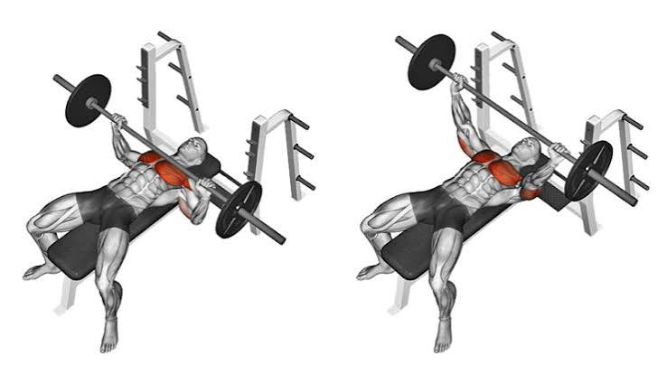
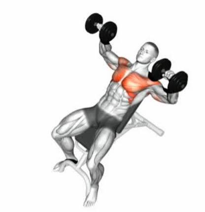
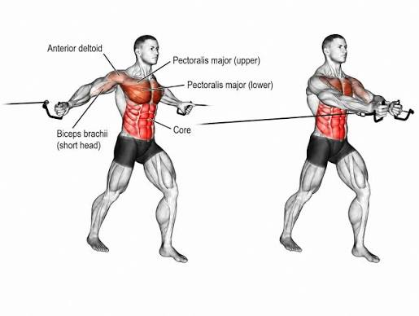

Bench Press
Targets: chest (pectorals), front shoulders, triceps
Bench Press demonstrationIron Tip Fitness
This page here has a list of basic movements as well as the muscle groups they target. Using the videos and pictures provided your fitness journey will undoubtedly go smoothly!

Targets: chest (pectorals), front shoulders, triceps
Bench Press demonstration
Targets: upper chest, front shoulders, triceps
Incline Dumbbell Bench Press demonstration
Targets: chest (pectorals)
Dumbbell Fly demonstration